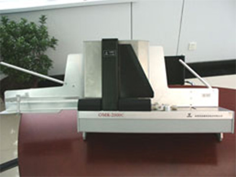
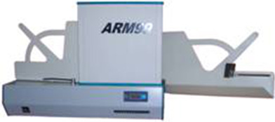

型号 ：OMR2000C 型

独立工作
阅读机采用独立电源，将处理完了的数据通过串行通讯口传给计算机，完全不用占用计算机的资源。
条码阅读
能全方位阅读信息卡的条形码信息。
产品简介
国内技术性能最先进的串口自动机，采用悬浮式纸仓，一次读卡量可达500张。
模块化设计
机械各部件均采用标准化、模块化设计，提高了各部件之间的通用性、互换性。
高速处理
自带的CPU速度快，不论主机的速度如何，其阅读信息卡最高速度可达4张/秒
开放结构
阅读机采用全开放的机械结构设计，方便工作后对光电头的清洁而且可通过更换光电头使既可用于铅笔填涂,又可用于钢笔填涂及不同密度读头。
纸仓容量
OMR2000C一次性最大容量为500张信息卡，还可以根据稳定的阅卡量调整纸仓的上升、下降幅度以提高工作效率。
传感技术
大量传感器的运用使OMR的工作处于全程可监控状态，并能快速准确地反馈信息，提高了工作效率和自动化程度。
同步齿形带
轮系采用同步齿形带传动，使阅读过程中信息卡运动更加平稳，提高了传动系统的使用寿命。
准确性高
采用先进的模糊识别算法，对填涂轻重不一及橡皮涂擦不净等情况的处理达到相当理想的程度。
纸张要求宽松
通过自校正手段来解决因纸张裁切偏差、走纸偏差等情况可能引起的错误判
别，大大提高了准确性。
系统支持
DOS、WINDOWS95、WINDOW98、WINDOWS NT操作平台。
阅读软件支持FOXPRO数据库及客户/服务器方式的数据库软件SQL SERVER、SYBASE、ORACLE等。
应用软件
提供DOS操作系统下的通用阅读系统及考试专用阅读系统，并提供C、FOXPRO等高级语言编程接口。WINDOWS 9X及WINDOWS NT操作系统
下的通用阅读系统（单机版、网络版）,中学考试阅读统计系统,中学评教评学系统，大学外语考试阅读分析
系统及WINDOWS95(98)环境下用户API接口。
配套服务
五岳鑫公司拥有众多经验丰富的软、硬网络工程师，可以为您提供完整的基
于WINDOWS NT、NETWARE 及INTERNET/INTRANET的网络方案，欢迎垂询，欢迎选购。同时也向广大用
户提供配套的信息卡设计及高质量的印刷服务，价格优惠。
售后服务
产品售出后，免费保修一年，终身维护。后续应用软件免费升级。
型号 ：北京贝格特 ARM99
产品编号
6181046016

产品介绍
CPU类型 ARM7TDMI-S
内存类型 板载32位SRAM内存
内嵌系统 UC/OS II
读卡速度 5-6张/秒
速度调节 格式文件10级调速
最大路号 46 路
自动程度 全自动、可在线升级、支持各路自动化标定 误 码 率 小于千万分之一
数据形式 代号为01-99，支持15选多
自动跟踪 同步框自动跟踪，适应同步框深浅不一致的情况
自检诊断 通讯、光电传感器诊断；内存及外设软件诊断
通讯方式 RS232与USB2.0双接口
配接主机 PⅡ、PⅢ、PⅣ台式机、笔记本
支持系统 Win98、Win98se、Winme 、Winxp、Win2000
节能设计 工作时上电，停机后休眠，2级功耗
内存类型 板载32位SRAM内存
内嵌系统 UC/OS II
读卡速度 5-6张/秒
速度调节 格式文件10级调速
最大路号 46 路
自动程度 全自动、可在线升级、支持各路自动化标定 误 码 率 小于千万分之一
数据形式 代号为01-99，支持15选多
自动跟踪 同步框自动跟踪，适应同步框深浅不一致的情况
自检诊断 通讯、光电传感器诊断；内存及外设软件诊断
通讯方式 RS232与USB2.0双接口
配接主机 PⅡ、PⅢ、PⅣ台式机、笔记本
支持系统 Win98、Win98se、Winme 、Winxp、Win2000
节能设计 工作时上电，停机后休眠，2级功耗